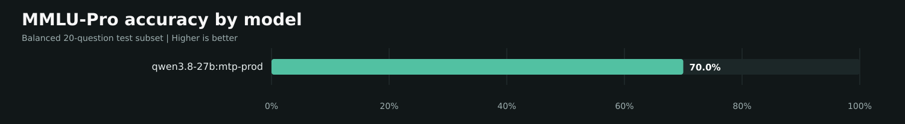
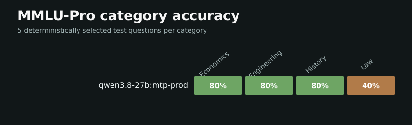

Started: 2026-10-04T22:25:38.522415-04:00 | State: complete | Answers scored: 20


| Rank | Model | Accuracy | Correct | Parsed | Generation tok/s |
|---|---|---|---|---|---|
| 1 | qwen3.8-27b:mtp-prod | 70.0% | 14/20 | 20/20 | 35.63 |
Zero-shot direct-answer evaluation on a deterministic, balanced subset of the MMLU-Pro test split. 5 questions are selected from each of 4 categories (20 total). Questions are sent in category batches. Temperature is 0, seed is 42, thinking is disabled, and malformed or missing answers score as incorrect.
This compact local comparison is not directly comparable to the official full 12,032-question, normally 5-shot CoT MMLU-Pro leaderboard.